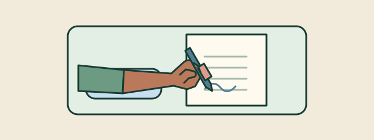
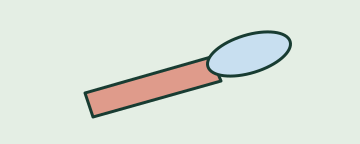
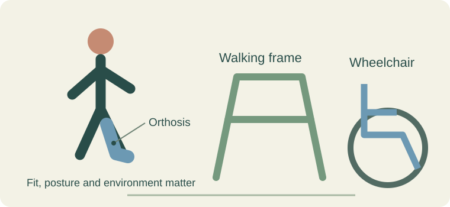

Interactive activity
Typing
Compare two ways to type the same message. Notice editing actions and effort.
Use a keyboard or the on-screen keys.
Compare typing setupsChoose a task that interests you. Each activity or demonstration can be explored at your own pace.
Interactive activity
Compare two ways to type the same message. Notice editing actions and effort.
Use a keyboard or the on-screen keys.
Compare typing setups
Interactive activity
Explore paper and forearm support, or draw with touch, pointer, or keyboard controls.
The drawing pad needs only your device. For paper practice, use a familiar pen and paper.
Open drawing practice
Educational demonstration
See how a supported setup changes the path from a table toward a target.
The illustration needs no equipment. It uses an empty spoon.
View the spoon lesson
Educational demonstration
Step through how a light object can be steadied, aligned, or moved.
Use the written or illustrated steps. A familiar lightweight object is optional.
View the object lesson
Planning guide
Explore contact points and think through support, surfaces, and access.
The diagram needs only your device.
Explore balance and access